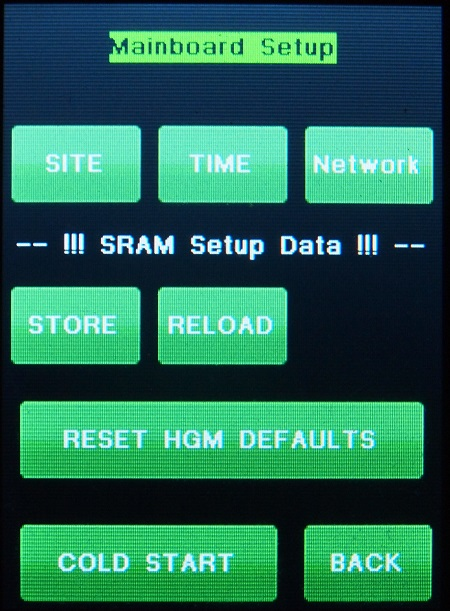

| Interactive Hand-Controller Menus - click on green button to Navigate |
|  | This is a new menu with Ver 5.2 Firmware The top buttons take you to the Site Menu, Time Menu, and Network Menu. The Store button will store the SDRam (battery backed-up) contents into the Micro-SDcard of the main unit. This is stored into a directory called CONFIG in a file called Gemini.cfg. After you set your Site, Mount type, Limits, Parking info, etc., you use this to make a copy of the SDRam values. You can bring this back with the "Reload" Button. This will restore all your values. Also when a firmware update is done, if the Gemini.cfg file exists in the Micro-SD card of the main unit, then your values should be restored. You would also use these two buttons if changing a battery. Store before removing the battery, and Reload after changing it. These functions was previously only available on the Web interface The "RESET DEFAULTS" button sets the Gemini-2 to the the G11 mount type. The Cold Start button will do a Enforced COLD START |